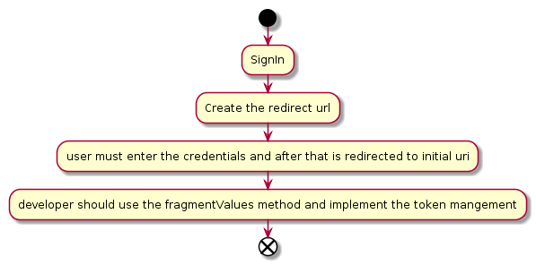
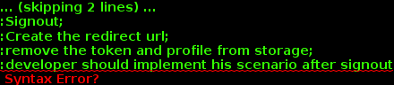

AdobeIdData the values for adobeId are read from window.adobeid or passed by using the constructor
Helper function used to transform fragment values into a json object
Method used to return the authorization url;
object sent from outside in order to have the possibility to override the default values when the redirect uri is created
string value used for csrf
represents the context which is passed during redirect
Helper function used to return the nonce value from fragment
Method used to return the authorization url;
; represents the re authenticate value. available values are: check and force. default value is "check"
object sent from outside in order to have the possibility to override the default values when the redirect uri is created
represents the context which is passed during redirect
Method used to return the authorization url;
represents the context which is passed during redirect
Method used to return the authorization url;
object sent from outside in order to have the possibility to override the default values when the redirect uri is created
represents the context which is passed during redirect
method used to notify that the library has been initialized
Method used to redirect the user to signin url

object sent from outside in order to have the possibility to override the default values when the redirect uri is created
string value used for csrf
represents the context which is passed during redirect
represents the grant type used for sign in flow
token {string} represents the token used for sign out externalParameters {object} - external parameters passed to sign out

Generated using TypeDoc
Class used as a facade for ims library in order to provide public access only to a part of the main library functionalities